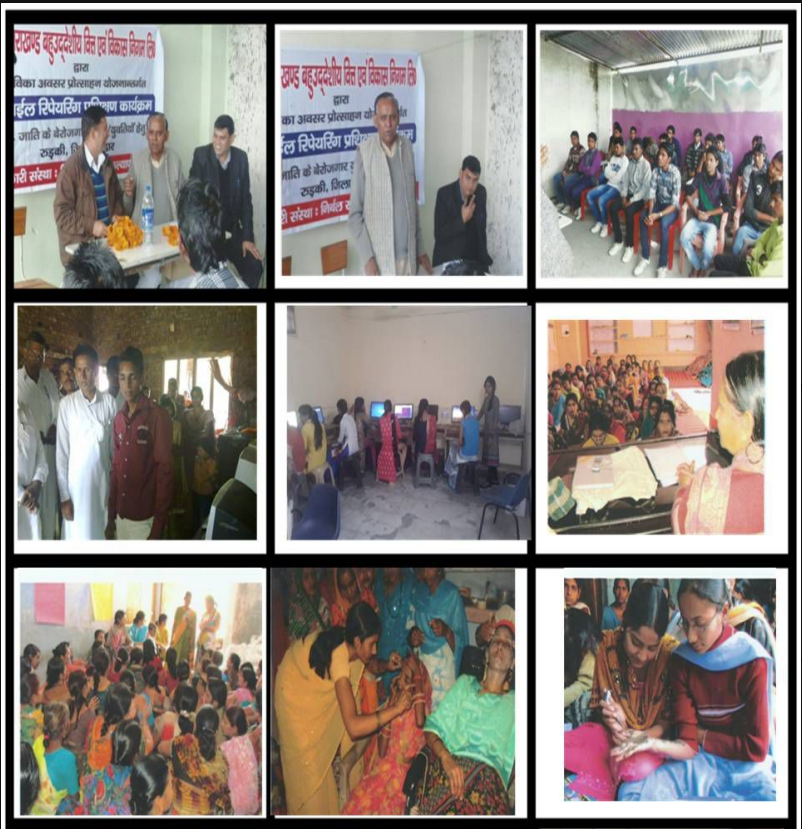
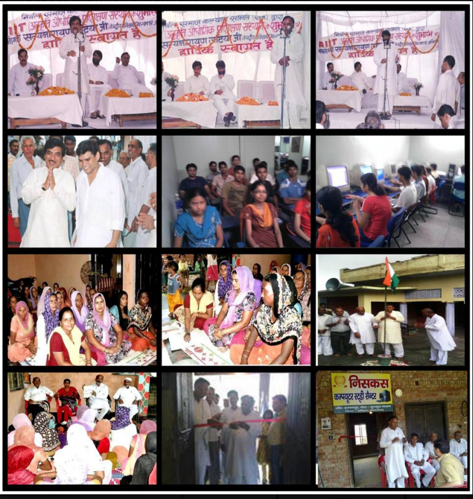

Education
Improving access, awareness, learning opportunities and educational status.
VOLUNTARY ORGANIZATION • EST. 2000
NISKAS works with weaker and disadvantaged communities to promote education, health, livelihoods, women’s development, vocational skills and sustainable agriculture.
Development grows stronger when local communities participate, build their own capabilities and contribute to solutions.
ABOUT US
NISKAS is a voluntary agency registered under the Society Registration Act, 1860. The organization has grown as a group working to promote educational status, health and environmentally sound, sustainable agro-based income-generating activities through village-level youth and other traditional institutions.
Its approach to the problems of underprivileged communities is based on partnership and developmental initiatives rather than charity. NISKAS seeks to provide local groups with adequate infrastructure, technical support and opportunities to become self-reliant in the development process.
KEY ISSUES
Improving access, awareness, learning opportunities and educational status.
Supporting community awareness and access to better health practices and services.
Promoting livelihood opportunities and practical pathways to income generation.
Strengthening women’s participation, skills, opportunities and community leadership.
Encouraging environmentally sound agro-based and sustainable income-generating activities.
Building skills, confidence and managerial capabilities for self-reliant enterprise.
Developing practical skills that can improve employability and livelihoods.
Forming and strengthening community-based organizations and local institutions.
MISSION STATEMENT
NISKAS works on the principle of rural reconstruction. Establishing self-governance and self-reliance among weaker and oppressed sections of society has been a fundamental motivating force for the organization.
The organization believes in the organic and inorganic growth of individuals and communities through increased exposure and development of core competencies, leading to intrinsic skills and managerial capabilities.
TARGET GROUP
OUR WORK


LEGAL STATUS
GET INVOLVED
For partnerships, volunteering, programmes or support, please contact NISKAS.
Address: New Delhi, India
Email: niskasngo@yahoo.com
Phone: +91 88601 84909
Headquarters: New Delhi